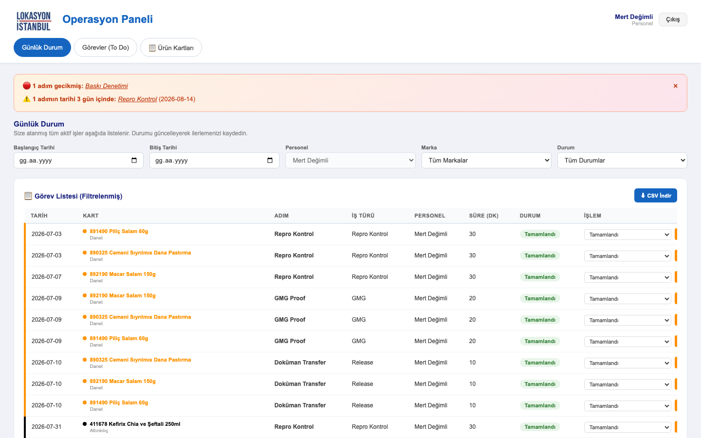
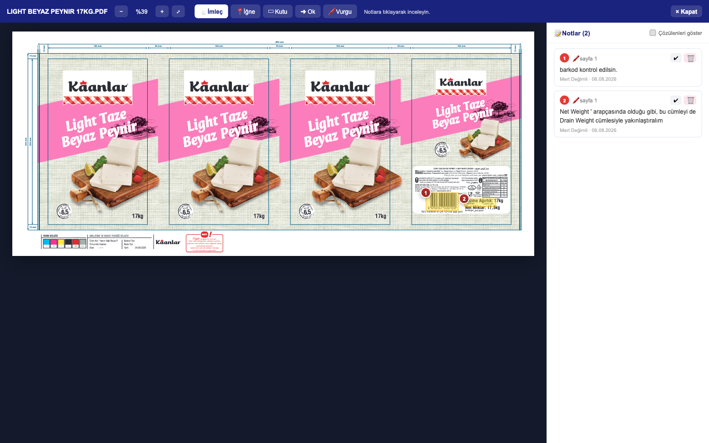
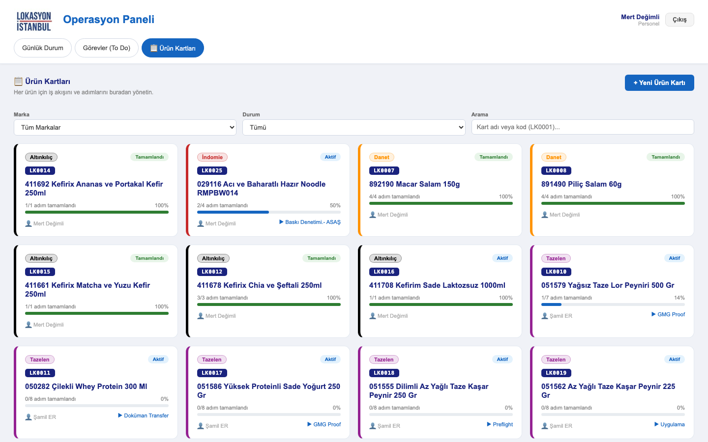
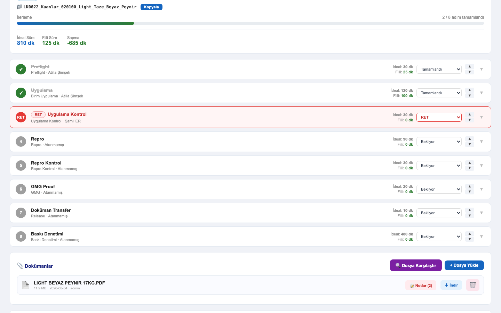
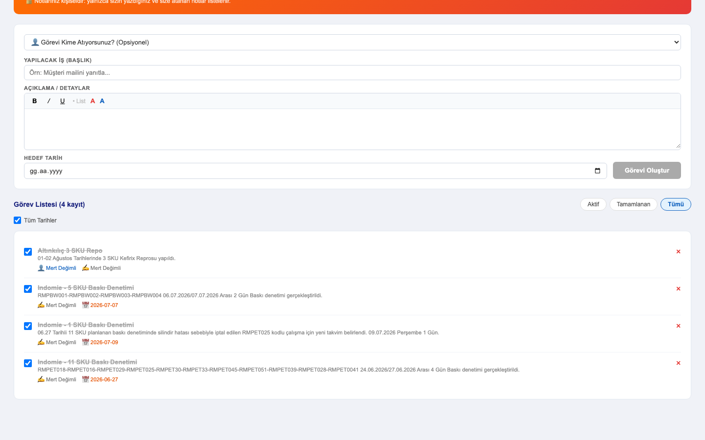

Panele tarayıcıdan lokasyonpanel.up.railway.app adresinden girilir. Kullanıcı adı ve şifreniz size iletilir. Giriş yaptıktan sonra oturumunuz açık kalır; başka bir bilgisayarda çalışacaksanız yeniden giriş yaparsınız.
| Sekme | Ne için |
|---|---|
| Günlük Durum | Size atanmış işler. Günlük takip ve durum güncelleme burada. |
| Görevler (To Do) | Kişisel not defteriniz. İşle ilgili kendi hatırlatmalarınız. |
| Ürün Kartları | İşin kendisi: kartlar, adımlar, dokümanlar, revize notları. |
Cmd/Ctrl + Shift + R) —
böylece en güncel hâli görürsünüz.
Bu kılavuz üç sekme üzerinden anlatır. Ekranınızda bunlardan biri görünmüyorsa ya da bir markanın işlerini göremiyorsanız, hesabınıza o yetki tanımlanmamış demektir; yöneticinize bildirin. Yetki tanımlandıktan sonra çıkış yapıp yeniden girmeniz gerekir.
Açılış ekranınız. Size atanmış tüm aktif işler burada listelenir; başkasının işleri görünmez.
Her ürün bir karttır. Kart kapağı, açmadan durumu anlamanızı sağlar.
LK0024 gibi kodu yazın.
Marka ve duruma göre de süzebilirsiniz.

Kartın altındaki sıralı adımlar işin omurgasıdır. Günlük listeniz de bu adımlardan oluşur.
Adıma tıklayın: sorumlu, hedef tarih, zorluk, süre sayacı (▶ Başlat / ⏸ Durdur) ve adıma özel notlar açılır. Sıralamayı sağdaki ▲▼ ile değiştirirsiniz.

Revize talebini sözlü bırakmayın: dosyayı panelde açın, düzeltilecek yeri işaretleyin, düzeltilince kapatın.
← → sayfa, Esc kapat.
_rev2) karışıklığı önler.
Revize gelen dosyada neyin değiştiğini gözle aramak yerine panele buldurun. Kart detayındaki 🔍 Dosya Karşılaştır iki dosyayı piksel piksel karşılaştırır.
Farkın olduğu yere yakınlaşın, sonra 1 ve 2 tuşlarıyla A ile B
arasında gidip gelin: yakınlaştırma ve konum korunur, değişiklik gözünüze çarpar.
İki dosyayı yan yana açıp aramaktan çok daha hızlıdır.
| Tuş / düğme | İşlev |
|---|---|
1 2 3 | A / B / Farklar arası geçiş |
| Fare tekerleği | İmlecin olduğu noktaya yakınlaşır |
| Sürükleme | Görüntüde gezinme |
1:1 | Gerçek piksel boyutu |
0 / ⤢ | Ekrana sığdır |
Esc | Kapat |
Ürün kartlarından bağımsız, kendi hatırlatmalarınız için. “Müşteriye dosya gönder”, “matbaayı ara” gibi işler buraya.

| Soru | Yanıt |
|---|---|
| Günlük Durum’da işlerim görünmüyor | Tarih filtrelerini temizleyin; boşken size atanmış tüm aktif işler listelenir. |
| Bir iş bana atanmış ama listede yok | Adımın durumu Tamamlandı olabilir ya da adım arşivlenmiştir. Kartı açıp kontrol edin. |
| Değişikliğim kaydoldu mu? | Kaydet düğmesi yoktur, anında kaydedilir. Kırmızı uyarı çıkmadıysa kayıtlıdır. |
| PDF açılmıyor / not ekranı boş | Sayfayı yenileyin. Dosya büyükse ilk açılış birkaç saniye sürebilir. |
| Yanlış dosyayı yükledim | Doküman satırındaki 🗑 ile silip doğrusunu yükleyin. |
| Yeni marka listede yok | Sayfayı yenileyin (Cmd/Ctrl + Shift + R). |
| Bir sekmeyi göremiyorum | Hesabınıza tanımlı değil. Yöneticinize bildirin; sonra çıkış yapıp yeniden girin. |
| Ekran | Tuşlar |
|---|---|
| Doküman notu | ← → sayfa · Esc kapat |
| Dosya karşılaştırma | 1 2 3 geçiş ·
+ − zoom · 0 sığdır · Esc kapat |